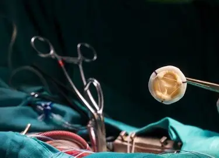

Kesehatan Tubuh
Operasi Katup Jantung Bocor: Ini Jenis, Prosedur, dan Risikonya

Table of Contents
Operasi katup jantung bocor merupakan prosedur medis yang dilakukan untuk memperbaiki atau mengganti katup jantung yang tidak berfungsi dengan baik.
Jika tidak ditangani dengan segera, kondisi ini dapat menyebabkan komplikasi serius seperti gagal jantung dan gangguan aliran darah ke seluruh tubuh.
Apa Itu Operasi Katup Jantung Bocor?
Operasi katup jantung merupakan tindakan medis yang dilakukan untuk memperbaiki atau mengganti katup jantung yang tidak berfungsi dengan baik. Katup jantung berperan penting dalam menjaga agar aliran darah tetap mengalir ke arah yang benar selama jantung berdetak.
Kondisi katup jantung bocor terjadi ketika salah satu atau lebih katup jantung tidak dapat menutup secara sempurna. Akibatnya, sebagian darah dapat mengalir kembali ke ruang jantung sebelumnya sehingga kerja jantung menjadi lebih berat.
Jika kondisi ini tidak ditangani dengan tepat, pasien dapat mengalami berbagai komplikasi seperti pembesaran jantung, sesak napas, gangguan aktivitas sehari-hari, hingga gagal jantung.
Jenis-Jenis Operasi Katup Jantung Bocor
Penanganan katup jantung bocor dapat dilakukan melalui prosedur perbaikan maupun penggantian katup jantung, tergantung tingkat kerusakan yang dialami pasien.
Annuloplasty
Dokter memasang cincin khusus di sekitar katup jantung untuk membantu katup menutup dengan lebih rapat sehingga kebocoran dapat berkurang.
Mitral Valve Clip
Prosedur minimal invasif yang menggunakan alat berbentuk klip untuk mengurangi kebocoran pada katup mitral tanpa operasi terbuka.
Patching
Teknik penambalan digunakan ketika terdapat robekan atau lubang pada daun katup jantung.
Ross Procedure
Katup aorta yang rusak diganti menggunakan katup paru pasien sendiri, kemudian katup paru diganti dengan katup donor.
TAVR
Transcatheter Aortic Valve Replacement merupakan metode penggantian katup aorta melalui pembuluh darah tanpa operasi jantung terbuka.
Tujuan Operasi Katup Jantung Bocor
Tujuan utama operasi katup jantung adalah memperbaiki fungsi katup sehingga aliran darah dapat kembali berjalan secara normal.
Operasi ini dilakukan untuk mengurangi gejala yang dialami pasien seperti sesak napas, mudah lelah, nyeri dada, dan penurunan toleransi aktivitas fisik.
Selain meningkatkan kualitas hidup, tindakan ini juga bertujuan mencegah komplikasi serius seperti gagal jantung, gangguan irama jantung, dan kerusakan organ akibat aliran darah yang tidak optimal.
Prosedur Operasi Katup Jantung Bocor
Sebelum operasi dilakukan, pasien akan menjalani pemeriksaan fisik, tes laboratorium, elektrokardiogram, serta pemeriksaan pencitraan jantung untuk menilai tingkat kerusakan katup.
Saat tindakan berlangsung, pasien diberikan anestesi umum sehingga tidak merasakan nyeri selama operasi.
Operasi dapat dilakukan melalui metode operasi terbuka maupun teknik minimal invasif tergantung kondisi pasien dan rekomendasi dokter.
Setelah prosedur selesai, pasien biasanya menjalani perawatan di ruang intensive care unit (ICU) untuk pemantauan ketat sebelum dipindahkan ke ruang rawat inap biasa.
Risiko Komplikasi Operasi Katup Jantung Bocor
Seperti prosedur bedah lainnya, operasi katup jantung memiliki beberapa risiko komplikasi yang perlu dipahami oleh pasien.
- Perdarahan selama atau setelah operasi.
- Infeksi pada area operasi.
- Gangguan irama jantung (aritmia).
- Penggumpalan darah.
- Gangguan pernapasan.
- Pneumonia.
- Gangguan fungsi katup yang diperbaiki atau diganti.
Risiko yang muncul dapat berbeda pada setiap pasien tergantung usia, kondisi kesehatan umum, serta tingkat keparahan penyakit katup jantung yang dialami.